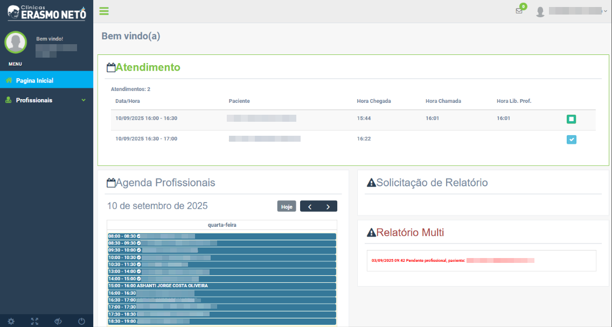
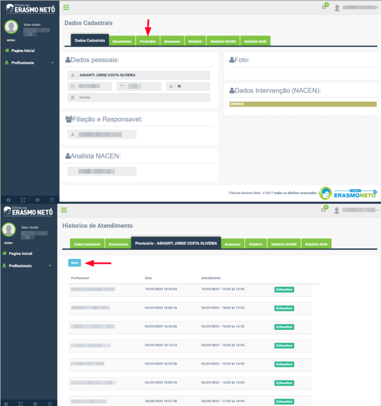

Guia Rápido: Evolução de Pacientes
1. Na página principal, selecione o nome do paciente que deseja evoluir.
2. Será aberta a tela de Dados Cadastrais. Acesse a aba Prontuário e clique em Novo.
3. No campo Tipo de atendimento, registre o status correspondente e em seguida preencha a campo em branco com as
informações necessárias do paciente.
4. Ao concluir, aparecerá um ícone de verificação ao lado do nome do paciente, indicando que o prontuário do dia foi
finalizado.